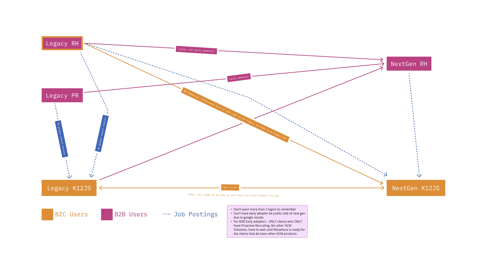
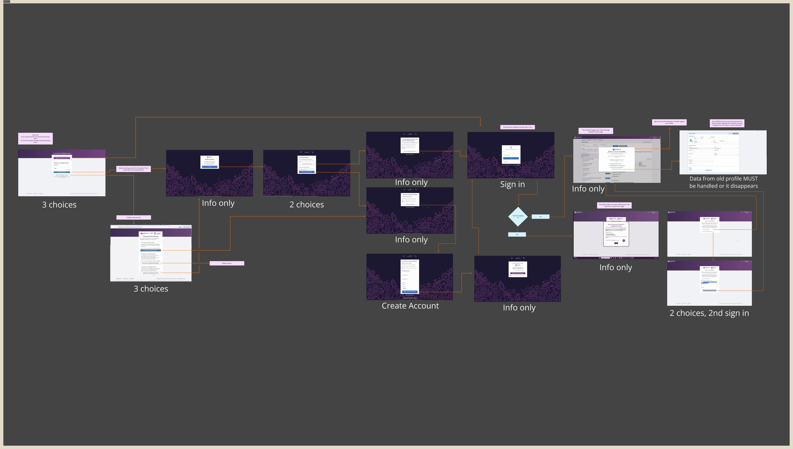
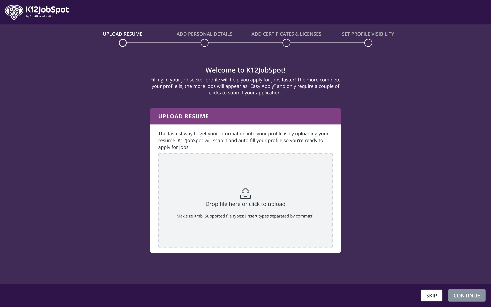
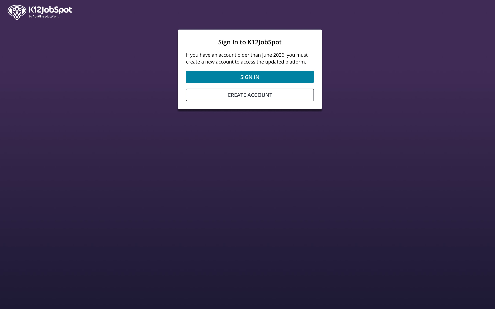

Frontline Education - K12JobSpot
User Migration Redesign
Achieving a 104% increase in flow completion after a time-constrained redesign.


Context
Launching a new version of K12JobSpot, the largest education-focused job board in the country, meant moving all 2.6 million users off a legacy identity system and onto a new one owned by our platform team. This required every user to create a new account, with an option to migrate some of the data from their old account. Early adopter numbers were bad: just under 1/2 of the users who started the migration finished it. Everything else about the launch rode on people actually reaching the product, so figuring this out was critical.

The Problem
The existing flow asked users to sort themselves before signing in. They had 3 options: new account, legacy account, or no account yet. Each choice opened another branch of screens and confirmations, and a user could pass through eight to ten of them before getting in. Additionally, any users with legacy accounts that managed to make it through the flow were immediately forced to migrate their data, or lose it for good. A huge roadblock when all they were trying to do was get into the product.
A few constraints made this harder than a normal login redesign:
- The legacy and modern databases couldn't talk to each other freely.
- A separate platform team owned authentication.
- We couldn't customize the platform-owned login screens.
- Legacy passwords didn't always clear the new security requirements.
- Data from the old account didn't line up perfectly with the new form fields.
- Profile data in the new system can only be saved in sections. If a user didn't have data in every field in a section, they were unable to save it until they filled in the missing information.

Making the Cut
Once I had a clear picture of the flow, I began with what seemed to be the most obvious problem: the unexpected data migration. Was it necessary? We didn't have time to rework the process, so it was a question of whether or not to cut it entirely. It had been in the plan long enough to have become a given. When I raised cutting it, Product pushed back — their worry was reasonable, that users would be upset to find old data gone.
Rather than argue, I asked the PM to pull three numbers:
- How many profiles had been created in the past year?
- How many edited in the past year?
- How many of those held anything beyond a name and email?
About 80,000 accounts had been created/updated in the past year, and only about 1/3rd of them had more than the basics. That meant that only about 1.2% of users would lose data that wasn't likely stale.
Additionally, the fields in the legacy product didn't match the new product, so even when we did migrate data, it was incomplete. Users were forced to fill in the gaps immediately after getting through the long account flow, which was worse than just starting fresh.
Once Product saw the numbers, they came around, and were relieved to let it go. They added a line to the migration announcement email telling users who wanted their old data to retrieve it first, since it wouldn't carry over. With data migration off the table, the redesign narrowed to a single job: get the user signed in.
Automate the Decisions
I redesigned the flow so that all of the decisions were handled by our system, rather than the user. The user enters an email; the system checks whether it belongs to a new account, an existing Frontline Platform Account, or a legacy account, and routes them to the right screen. I worked through the routing logic with the PM and tech lead, checking each path against what the identity platform could actually support. Since we were handling the checks before asking for a password, we could securely get the user to the right place without a link between the legacy and new account databases. The most screens any given user would encounter was 2 once they input their email.
The Wrench
Two days before the final sprint was due to begin, engineering came back with a problem: the platform team couldn't build the account checks the whole design relied on. They were underwater — buried in requests and firefighting a backend that kept going down, with no room to take on more. Even more problematic: their identity system is shared across every Frontline product. Checking for legacy accounts couldn't be scoped to K12JobSpot alone — switch it on for us and you switch it on everywhere, for every product on the platform. This meant we had to find a new approach, and fast.

Bandaid
We went with a blunter, date-based rule. A message on the starting screen that warned users with accounts older than a certain date to create a new one. Two buttons: sign in, or create an account. Users who picked wrong would be caught by the system — try to create an account you already have and it sends you to sign-in; try to sign in without one and it sends you to create.
It didn't do the work for the user the way the email-first version would have. But it held onto the same rule: give people the fewest choices possible, and cover the edge cases with clear guidance instead of extra screens. Sign-in came out to two screens, account creation three, and even a wrong first guess topped out around four — down from eight to ten.
Outcome
Migration completion went from 47% to 96%. Both figures come from Pendo, measured over comparable two-week windows — the first once we had enough volume to be confident the original flow was failing, the second in the two weeks after the new version deployed. Thanks to the flood of new users, the districts have seen a significant increase in quality applicants for the jobs they are posting, which is the ultimate customer outcome we were aiming for.
On Reflection
Clearly the biggest misstep on this project was the disconnect between the K12JobSpot team and the Platform team. I'm still not quite sure how it happened, since we were meeting with them regularly, but the result was that we didn't know what the platform could and couldn't do until it was almost too late to react. The ideal solution that I had spent time working out and vetting with the K12JobSpot team wasn't viable. Since this project I've made sure to triple-check with my tech leads regarding viability, especially when external teams are involved.
Fortunately, the band-aid version of the flow worked well, exceeding expectations. It worked because both versions traced back to the goal of automating the decisions that the old flow put on the user. Because I was laser focused on shifting the complexity from the user to the system, the quick pivot still served that goal, and the user experience was clearly improved.